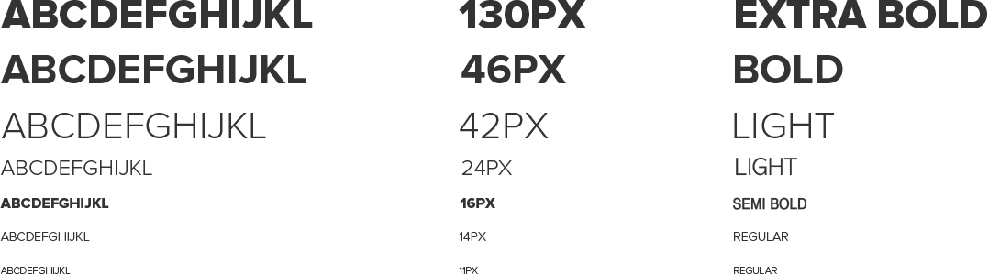
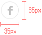
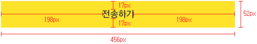
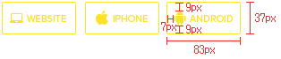
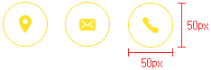
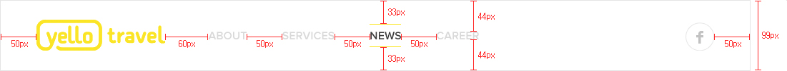

디자인 규칙
DOWNLOAD
현재 내용에 있는 파일을 다운로드해서 보실 수 있습니다.
디자인 가이드
COLOR
옐로트래블은 일관된 아이덴티티를 유지하기 위해 규정된 컬러를 사용하도록 합니다.
주색상
-
#fee227
R: 254
G: 226
B: 39 -
#2c323a
R: 44
G: 50
B: 58
부색상
-
#f6f6f6
R: 246
G: 246
B: 246 -
#f1f1f1
R: 241
G: 241
B: 241 -
#808489
R: 128
G: 132
B: 137 -
#1b1f24
R: 27
G: 31
B: 36
FONT (system)
본문, 서브 페이지 타이틀 등 거의 모든 텍스트 요소에 쓰이며, 웹 접근성을 높이고 다양한 기기에
대응해나갈 수 있게 끔 차후에는 비중을 늘려나갈 수 있도록 한다.
맑은 고딕

PROXIMA NOVA

chaparral pro
italic
BUTTON & ICON
이미지-텍스트 버튼을 사용하며, 가이드 PSD의 버튼을 수정해서 사용하는 것을 원칙으로 한다.
단, 보조 버튼에 한해서 담당 디자이너가 필요하다고 판단할 때 메인 컬러를 응용해 코드로 된 버튼 요소를 새로 만들 수 있다.
BUTTON
MAIN

ABOUT

SERVICE : 모바일에서는 텍스트 없이 아이콘만 노출

ICON
ABOUT

GNB
GNB 영역은 다음과 같은 구조로 규정하여 사용한다.
구성

* GNB가 이미지 위에 위치해 있을 경우 background와 메뉴는 투명값 적용하여 사용.
FONT : proxima nova ( semi bold ) size : 16 px
OFF COLOR : #666666 / 투명값 적용시 : #ffffff (50%)
ON COLOR : #3d3d3d ( bar color : #fbe526 ) / 투명값 적용시 : #ffffff
SUB VISUAL
SUB VISUAL 영역은 다음과 같은 구조로 규정하여 사용한다.
구성
FONT : proxima nova ( light ) size : 42 px
proxima nova ( regular ) size : 14 px